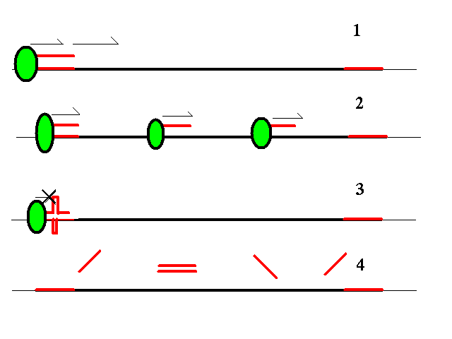

Selección de cebador (primer)
Utilidad del cebador
El cebador sirve
de punto de anclaje para la DNA polimerasa y como promotor del
inicio de la reacción de replicación del DNA. En el
laboratorio usamos cebadores para iniciar reacciones de replicación
del DNA en los puntos deseados de una muestra, normalmente con el
fín de realizar reacciones de secuencicación dirigida
o para amplificar el número de copias de una muestra de DNA
(PCR).
Propiedades del cebador
Para que el
cebador sea útil debe poseer unas propiedades determinadas:
- debe ser
específico de la región que queremos replicar
- debe unirse con
suficiente energía para soportar las condiciones del
experimento
- no debe permitir la
formación de estructuras que dificulten la reacción
Selección de cebador con GCG (prime)
El programa
prime de GCG permite seleccionar
cebadores indicando condiciones y/o restricciones para guiar la
decisión.
- Posición: En
el caso de PCR se puede indicar la región de la secuencia
que deseamos amplificar. Para secuenciación permite indicar
la posición aproximada del incio de la reacción.
- Energía de
unión: se puede indicar el contenido en GC y las
temperaturas de fusión para el cebador y el producto.
- Tamaño: es
posible indicar un rango de tamaños aceptables para el
cebador.
- Composición:
bases requeridas en el extremo de anclaje 3' (3' clamp).
- Diferencia máxima
entre las temperaturas de fusión de los cebadores y del
producto de PCR.
- Para PCR es posible
indicar un rango de tamaños para el producto.
Para que el
cebador sea eficiente, es conveniente evitar que el cebador tenga
tramos auto-complementarios extensos para evitar la formación
de estructura secundaria. Además, en PCR es preciso que los
dos cebadores no sean complementarios entre sí para evitar la
formación de dímeros. Y, por supuesto, debe ser
específico y no unirse con demasiada afinidad a ninguna otra
región de la secuencia.
En la siguiente
figura se muestran algunos ejemplos gráficos de los problemas
que plantea la selección de un cebador:

- En la figura
1 se muestra la situación deseada habitualmente: hay una
región del DNA molde que deseamos amplificar, a uno de cuyos
extremos se une el cebador. Al par molde-cebador se une una
DNA-polimerasa que inicia la reacción de transcripción.
- En la figura 2
tenemos el caso en que el cebador es poco específico: puede
unirse a otras regiones del DNA molde con afinidad suficiente para
formar dímeros en las condiciones experimentales de la
reacción: en este caso se producen varios sitios de
iniciación y obtenemos múltiple productos
heterogéneos mezclados.
- En la figura 3
se observa el caso en que el cebador presenta complementariedad
consigo mismo y permite la formación de estructura
secundaria: estas zonas de estructura forman barreras al avance de
la polimerasa e impiden un inicio correcto de la replicación.
- Finalmente, la
figura 4 muestra el caso en que la afinidad del cebador por
el molde es insuficiente para las condiciones experimentales
elegidas: el cebador se suelta del molde y/o se une a otras
moléculas de cebador. La reacción no tiene lugar o lo
hace de forma nuy ineficiente debido a que la DNA polimerasa no
encuentra dímeros DNA molde-cebador donde iniciar la
reacción.
Ejemplo:
- Acceder a la cuenta en el servidor
telnet es.embnet.org
login: usuario
password: xxxxxxxx
...
|
- Activar el paquete de Wisconsin:
- Elegir una
secuencia de prueba. Se puede extraer cualquier secuencia de la base
de datos, introducir una nueva o usar una de ejemplo:
- Para ver los
resultados en forma gráfica es preciso indicar previamente
a GCG qué tipo de dispositivo gráfico deseamos
emplear, por ejemplo:
- Correr el
programa "prime" y probar con diversos parámetros:
> prime
Prime of what sequence ? ggamma.seq
...
|
- Por defecto el
programa busca cebadores para PCR. Si se desea buscar cebadores para
secuenciación basta con indicar que restrinja la búsqueda
a cebadores directos (-forward) o
inversos (-reverse).
Opcionalmente se
puede proporcionar un fichero con secuencias de cebadores para que
el programa seleccione el mejor de entre ellos.
Otros programas
Existen otros programas (p. ej. primer) más
completos que funcionan con los mismos principios. En concreto,
primer fué desarrollado en el
Whitehead Institute como un programa sumamente completo de análisis
de cebadores para PCR. Este programa precisa que las secuencias
estén en un formato especial: para convertir una secuencia de
GCG a este formato usamos primero el programa toprimer:
> toprimer
ToPrimer converts a GCG format sequence to the native Primer format.
ToPrimer of what GCG sequence? Ggamma.seq
Begin (* 1 *) ?
End (* 1700 *) ?
How do you want to call the output file? ggamma.pri
> primer
...
File containing template sequence(s): ggamma.pri
Would you like: 1) automatic analysis of this sequence
or 2) manual testing of primers for this sequence? 1
...
|